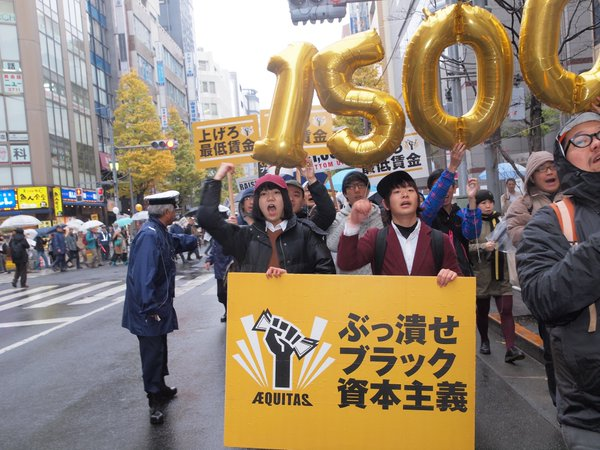

日本偶像在中国俘获了一大票年轻人的心，提起那些漂亮的小姐姐小哥哥，总会听到几声兴奋的尖叫。
从流行文化，到各类物件，再到生活方式，两国年轻人似乎越来越亲近。
日本青年低欲望，中国青年佛系生活；日本青年穷忙，中国青年996；老后破产的可怕景象也袭遍朋友圈。
时至今日，日本与中国在经济、社会和人口等等问题有着相似的症状。
要么穷忙，要么过劳。世道艰辛，且行且珍惜。
这几年，在日本，终于有一群年轻人开始说：“不！”

受到发源于美国的“最低时薪15美元”运动的鼓舞，一群日本年轻人成立了“正义”组织。他们受够了贫穷，他们要求全国每小时最低时薪为1500日元（约合15美元），“正义”将致力于日本国民经济的民主化。
2017年4月，日本繁华商业地段东京新宿地区，1500多人走上街头，抗议日本普遍贫困现象，要求提高基本工资。许多行人纷纷举起手机拍照，抗议者则高喊：“如果你想提高工资，请发出你的声音。”
在他们之中，不少还是大学生。其中一名参加抗议游行的20岁大学生拿起扬声器说：“并非所有学生都能参加集会，因为他们必须把时间用在打零工。我代表他们出来发声。“
“我们除了豆芽，别的都吃不起，我们想给孩子们一个好生活。”
参加集会的很多都是20多岁的年轻人，藤川理絵在那时25岁，她说：“按照现在日本的平均工资，工人甚至看不起病。”
藤川理絵还是个孩子的时候，她父亲是一名牙医，平时要兼职送报纸。一次意外，她父亲送报纸摔伤腿，就此失业。
这次事故，使得她从高中就开始业余做兼职。她靠借钱完成大学教育，30年的贷款，她每月需要还15000日元（约合人民币900元）。
自20世纪50年代以来，日本劳工运动一直在不断式微。日本工人参与工会的比率继续下降，从1949年的55.8％降至今天的17.4％。
在日本大部分工会都服务于“正式工”，而合同工和兼职雇员的比例不断上升，“正义”组织正在寻求改变。
自20世纪90年代以来，日本的非永久性合同工人数量稳步增长，同时贫困率达到历史最高水平。 根据联合国儿童基金会今年发布的一份报告，日本在世界上最富裕的国家中儿童贫困程度最高。
与合同工相比，尽管“正式工”相对收入稳定，但许多“正式工”也成为工作条件恶化的受害者。 一名年轻女子自杀身亡，她在一家广告公司工作，每月加班时间超过100小时，引发广泛关注。
在最低时薪15美元发源地美国，快餐工人的斗争最多，取得胜利也最多。日本快餐工人也开始行动了，行动者表示：实现体面工作，需要国际联合。
2019年4月15日，在日本涩谷忠犬八公像前聚集了70人，他们的诉求是把全国的最低时薪提高至1500日元。这些抗议者去了麦当劳，也去了汉堡王，他们只想要体面地劳动。
关于主要口号(第90届五一节)
反对安倍9条修宪 ，废除战争法！
市民和在野党共同战斗，不允许安倍政权撤退。
制裁自主劳动制度的扩大、高度职业化制度。
确立八小时劳动制度，确立能让人正常生活的工资和劳动规则。
降低贫困和贫富差距。通过大幅度提高工资和底价，使经济复苏使地域活性化。
以实现最低时薪1500日元，实现统一全国最低工资为目标.
中止增税百分之十的消费税。
扩充养老金、医疗、看护等社会保障制度。
反对安倍“再生教育”政策。
支持灾民的生活与职业的复兴。
从零核电向可再生能源转换。
削减军事费，转用于生活、福利、教育、防灾。
停止建立战争国家！
反对边野古新基地建设。
撤回“鱼鹰直升机”的全国配备。
批准核武器禁止条约。
这次集会的组织者“全劳联”（全国工会总联盟）还说今年五一国际劳动节，他们要搞事情。
2019年5月1日，代代木公园等你来。提高最低工资，体面工作。
- source： https://www.jianjiaobuluo.com/content/106576
- original source1：http://www.zenroren.gr.jp/
- original source2： https://english.kyodonews.net/news/2017/06/89a61447c2ab-feature-young-people-mount-campaign-to-raise-minimum-wage-end-poverty.html
- original source3： https://wagingnonviolence.org/2016/12/japan-fight-for-15-living-wage-aequitas/
- compiler：：王小嗨
- Thanks 朋克妇女